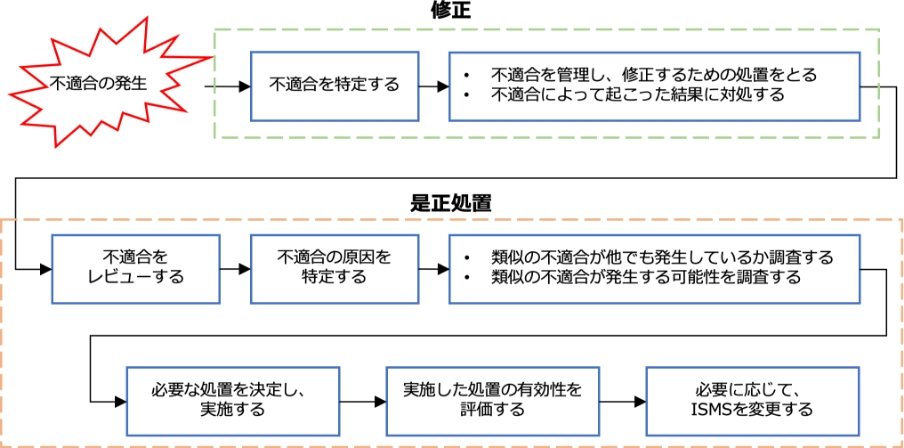
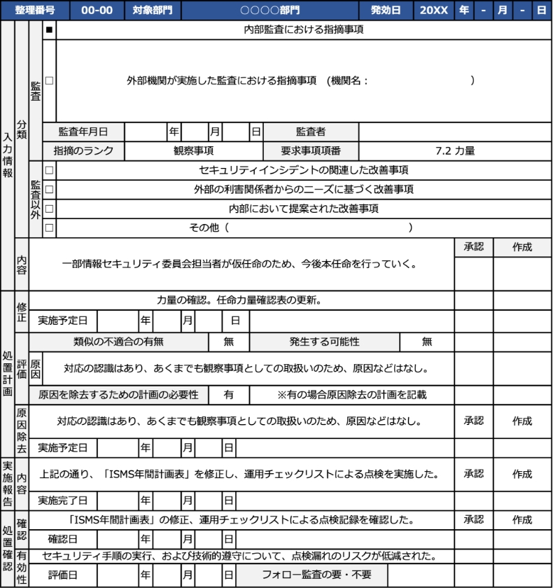

13-2-8. ISMS：10. 改善
「10. 改善」は、PDCAサイクルの「Act（改善）」に位置しており、ISMSの改善を行います。
10. 改善
作成ドキュメント（例）
10.1 継続的改善
ISMSのPDCAサイクル（「4. 組織の状況」から「10. 改善」までの活動）を継続して実施し、情報セキュリティパフォーマンスを向上させるために必要となる改善を行っていきます。具体的には、情報セキュリティ方針や情報セキュリティ目的の計画、リスクアセスメントやリスク対応をもとに決定した管理策の実施を継続して行い、改善していきます。
ー
10.2 不適合及び是正処置
不適合が発生した際に是正処置を実施します。不適合とは、ISMSの要求事項を満たしていないことです。具体的には、管理策の不備や未実施、セキュリティインシデントの発生などのことです。
是正要求書兼回答書
10.2 不適合及び是正処置
作成するドキュメント
是正要求書兼回答書
審査でISMSに不適合が検出された場合は、是正処置をしなければなりません。是正処置とは、不適合について、その原因を取り除き、再発防止を図る処置を指します。是正処置は以下の図のようなプロセスで実施されます。
「不適合の性質および講じた処置」と「是正処置の結果」について、文書化した情報を残さなければなりません。そのため、内部監査で不適合が出た際は、是正要求書とその回答書を記載して保存することになります。
是正要求書兼回答書の作成方法（例）
前ページで説明した「不適合の性質および講じた処置」と「是正処置の結果」についての内容を記載します。
